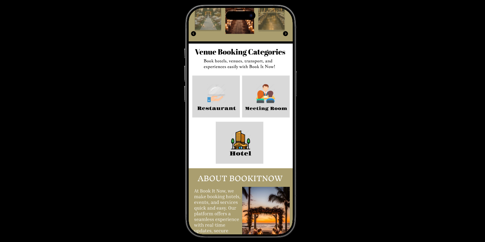
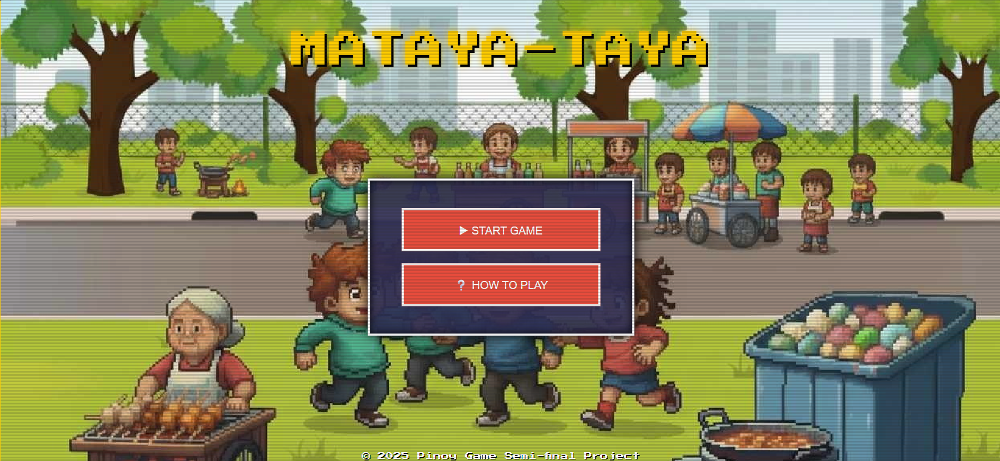
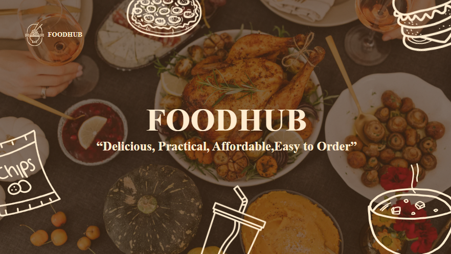

01 introduction
01 introductionProject One — Introduction
A clearer way to turn scattered information into decisions people can act on.

Thoughtful work. Useful outcomes. I bring ideas, technology, and design together to create projects that solve real problems and make people's lives easier.
A clear introduction to who you are, what you care about, and the value you want to create.
I believe good projects start with understanding people and the problems they face. Before building anything, I take time to understand their needs and think about how technology can help. From there, I build, test, and improve my work along the way. My goal is to create digital experiences and projects that are simple, accessible, reliable, and genuinely helpful to the people who use them.
01 introductionA clearer way to turn scattered information into decisions people can act on.

02 · BookItNowBookITNow is a venue booking system that makes it easier to find and book the perfect place for birthdays, parties, and other special occasions.

03 · Mataya-TayaA practical concept shaped around user needs, constraints, and measurable goals.

04 · EXPERIMENTAn experiment in combining visual craft, emerging technology, and thoughtful content.
Keep this section honest and focused on the tools and abilities you can confidently demonstrate.
Strong outcomes come from more than tools. They need clear communication, sensible decisions, curiosity, and the discipline to test assumptions.
Use a concise timeline to show how your experience, studies, and independent work have shaped your perspective.
Building practical projects, developing technical skills, and learning through research, experimentation, and feedback.
Your school or institution · Add your focus areas, relevant coursework, and achievements.
Exploring modern tools, accessibility, interface design, and better ways to build useful digital products.
Optional articles, case studies, presentations, or lessons learned can give visitors a deeper view of how you think.
Tell me what you're building, who it's for, and what you'd like to improve. Let's explore whether we can make something useful together.